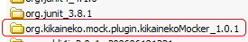
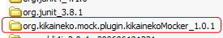

KikainekoMocker
はじめてみよう
インストール
1.機械猫モッカープラグインをdownloadして、zipファイルを解凍します。
2.解凍したフォルダーを、eclipseのpluginsフォルダーに入れます。

これでプラグイン導入完了です。
これだけで完了って！Eclipseかっこいいー！
2.解凍したフォルダーを、eclipseのpluginsフォルダーに入れます。

これでプラグイン導入完了です。
これだけで完了って！Eclipseかっこいいー！
※Eclipseを使用せずに、コマンドラインからも使用可能です。
テスト作成
1.プラグインが導入できたら、Eclipseを起動してください。
2.ここでは、サンプルとして【 KMSample 】というプロジェクトを作成しましょう。
3.KMSampleにsampleパッケージを作成します。
4.sampleパッケージにCalcTest.javaを作成します。

5.このCalcTest.javaに、「テストのサンプル」で例としてあげているテストコードを実装します。
6.当然、この段階ではCalcクラスは存在しないので、Eclipseに激しく怒られます。

2.ここでは、サンプルとして【 KMSample 】というプロジェクトを作成しましょう。
3.KMSampleにsampleパッケージを作成します。
4.sampleパッケージにCalcTest.javaを作成します。
5.このCalcTest.javaに、「テストのサンプル」で例としてあげているテストコードを実装します。
6.当然、この段階ではCalcクラスは存在しないので、Eclipseに激しく怒られます。
機械猫モッカー実行
1.CalcTest.javaを右クリックしてください。
2.【機械猫Mocker】→【モックの生成】を実行してください。

3.次のような警告がでますが、気にせず「はい」を押してください。
（2回目以降は出てきません）

4.すると、Calc.javaが生成されています。わーい。

2.【機械猫Mocker】→【モックの生成】を実行してください。
3.次のような警告がでますが、気にせず「はい」を押してください。
（2回目以降は出てきません）
4.すると、Calc.javaが生成されています。わーい。
テスト実行
1．最後にClacTestのJuitを実行してみましょう。

ばっちり、緑です！やったー！！
ばっちり、緑です！やったー！！